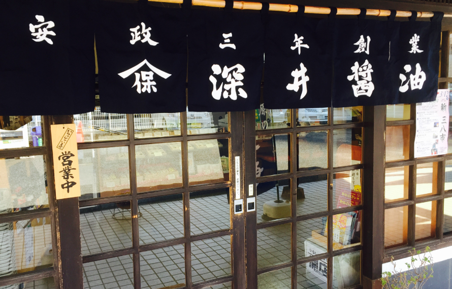
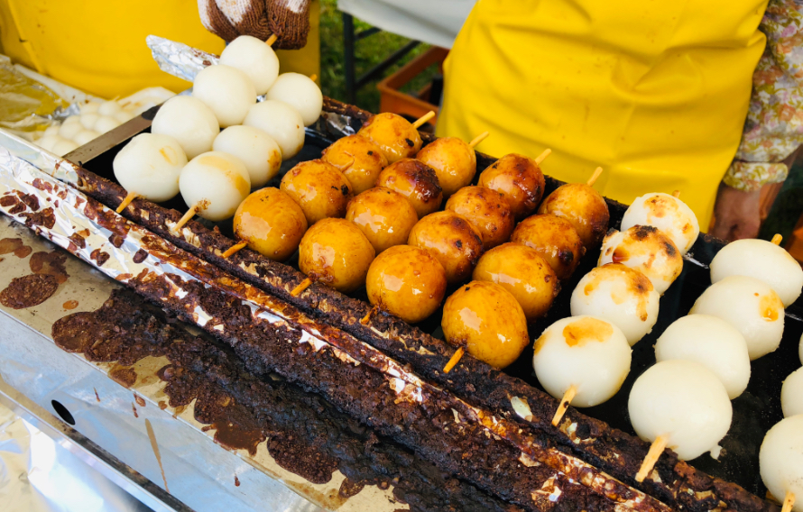
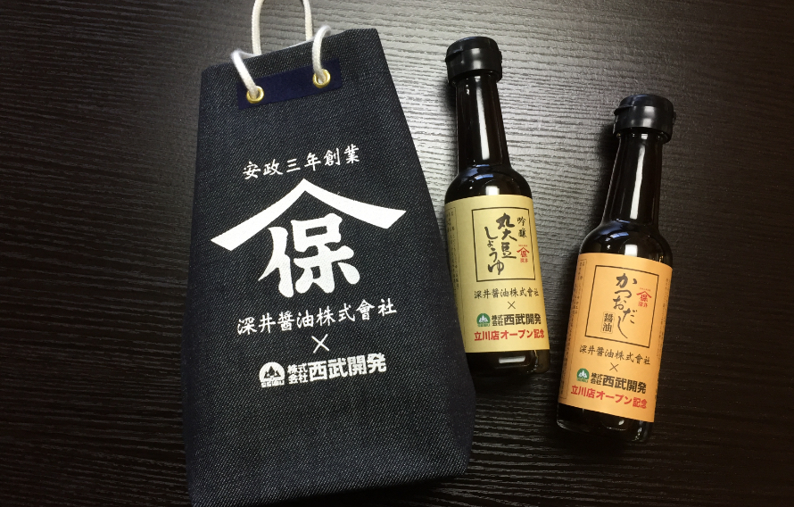

深井醤油についてabout
-
-
食を通じて、お客様に
笑顔と感動をお届けします。 -
たかが醤油、されど醤油。
いつもの食卓に、一味違った彩りで
ささやかな驚きを、
そんな気持ちで作っています。
-
食を通じて、お客様に
-
-
時代を超えて食文化を
支え続けます。 -
古くは焼き団子、
そして今はたまり漬けや
所沢焼きそばなど、
伝統を守りながら、
新たな味への挑戦を続けています。
-
時代を超えて食文化を
-
-
地域社会とともに
成長します。 -
所沢で生まれ育った味を、
地域のみなさんに知ってもらいたい。
イベント屋台の出店や、
食育などにも力を入れています。
-
地域社会とともに
歴史history

ヤマホの由来
深井醤油は、安政三年（西暦1856年）より続く所沢の醤油屋です。商標の「ヤマホ」は、創業者「深井保平」の名から「保」の字を用いたことに由来します。

焼き団子とヤマホ
所沢名物として有名な「焼きだんご」ですが、
明治27年に「焼きだんご組合」によって品質統一のために定められた8つの「申し合わせ事項」があります。「一串4個、両端は大きく、中2個は小さく作ること」「竹串は5寸5分の青竹を使用すること」など。
その中の一つに、「醤油は所沢産のヤマホに限る」と書かれています。創業以来、時代を超えて所沢の食文化に深く関わって来たのは、そんな理由がありました。

そして、現在へ
現在では醤油ベースの秘伝の漬物液で野菜をじっくり漬け込んだ「たまり漬」や、厳選した素材からふんだんに出汁をとった「だし醤油」などの製造販売も行っております。地域のイベントへの出店や、新ご当地グルメ「ところざわ醤油焼きそば」専用醤油の開発、
ミニ甚吉袋（一升瓶などを持ち運ぶために使用されていた袋をミニサイズにアレンジ）の制作など、伝統の製法と味を守りながらも、常に新しい味、新しいモノ作りにチャレンジしております。